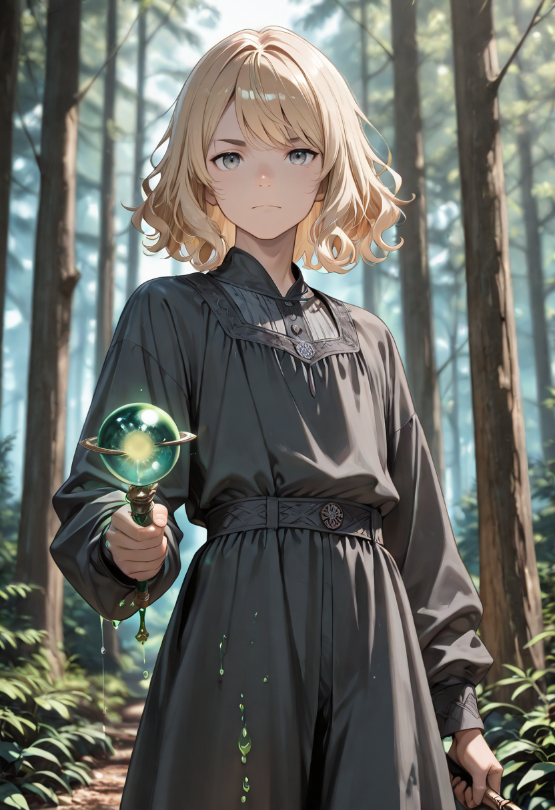

No Such Thing as Calm
The Wind Mage has learned to stop treating air as neutral. Every atmosphere is an argument. Every prevailing wind is a political position. Every gust that knocked a projectile off course in history was the wind taking a side, whether or not anyone noticed. The Wind Mage notices. She picks sides too.
Her development from the Corrupted stage removed the ambivalence. The Corrupted Wind Mage creates disruption without a clear agenda: turbulence for turbulence's sake. The Wind Mage has an agenda. She uses the wind the way a skilled fencer uses misdirection , not to overwhelm, but to create the precise opening that everyone else in the formation can step through.
She is one of the fastest units in the entire Araldi branch. The trade is fragility: she does not take hits well, but she is almost never where the hit was directed. The battlefield around her is slightly unpredictable at all times , umbrellas do not work near her, fires lean the wrong direction, dust moves in counter-intuitive patterns.
Tactical Data
Wind Lance
BaseTornado
ActiveAerial Edge
PassiveGallery